Introduction
This chapter explores how A Great War Requiem thematically integrates traditional plainchants, focusing specifically on Requiem aeternam, Kyrie, Dies Irae, Pie Jesu, Sanctus, Lux aeterna, and Requiescant in pace. Additionally, the chapter examines the A Great War Requiem’s central goal:
G1 Incorporate Requiem Mass plainchant into the melodic materials and harmonic framework of the composition.
The Requiem aeternam and Dies Irae melodies receive particular focus for their unifying role throughout the Requiem. I reworked Requiem Mass plainchant melodies, adapting them to the unique mood of a War Requiem and my own contemporary musical language. The composition process involved harmonic recontextualization (often using minor triads or altered tones) and fragmenting the plainchant melodies into smaller melodic cells.
Thematic Analysis of Plainchant Motives
A Great War Requiem integrates Requiem Mass plainchants—including the Introit Requiem aeternam, Kyrie, Sequence: Dies Irae, Pie Jesu, Sanctus, Communion: Lux aeterna, and Post Communion: Requiescant in pace—into its intricate melodic and harmonic design. Notably, the plainchants Requiem aeternam and Dies Irae act as thematic and structural threads, weaving cohesion throughout each movement of the work.
Requiem Aeternam and Dies Irae
Requiem aeternam and Dies Irae, the most prominent plainchants in the piece, provide thematic and structural unity, appearing throughout A Great War Requiem, especially in the “Requiem aeternam et Rest” and “Postlude: Requiem aeternam et Rest” movements. Here, they function as primary melodic material, countermelodies, and even elements within the harmonic structure. Examples 18, 19, 20, 21, 22, and 23 from Chapter IV illustrate plainchant integration.
Example 18 demonstrates the thematic integration of Requiem aeternam and Dies Irae. Blue EXAMPLE 17. Introit Requiem aeternam, Requiem Mass, in Liber Usualis in Modern Notation, p. 1204. Ré - qui - em *ae ter - nam dó - na é - is - Dó - mi - ne: et lux per - pé - tu - a lú - ce - at é - - - is. EXAMPLE 18. Sequence: Dies Irae, Requiem Mass, in Liber Usualis in Modern Notation, p. 1208. Dí - es í - rae, dí - es íl - la, In this composition, I eschewed direct quotations of the Requiem Mass plainchant melodies, instead opting for a process of reconstruction and adaptation. Such an approach allows for the integration of the plainchant within the broader stylistic framework of the Requiem and its thematic exploration of war, specifically the Great War. The plainchant reinterpretation in A Great War Requiem often incorporates elements of minor triadic harmony and chromatic alteration, contributing to the overall moods of Rest, light, death, anger, grief, and reflection (see Example 19).
EXAMPLE 19. Cypret, “Requiem aeternam et Rest,” A Great War Requiem, mm. 1-5. The organ pedal in mm. 1-5 of A Great War Requiem presents an alteration of the Requiem aeternam plainchant. The opening motif of F–G–F–F is transformed into F–G♭–F, introducing a chromatic inflection that adds a new dimension to the melody. Following the introduction, the Requiem aeternam motive comes into focus in mm.11-14. Here, it serves as the primary melodic material for the “Requiem aeternam” section (see Example 20)
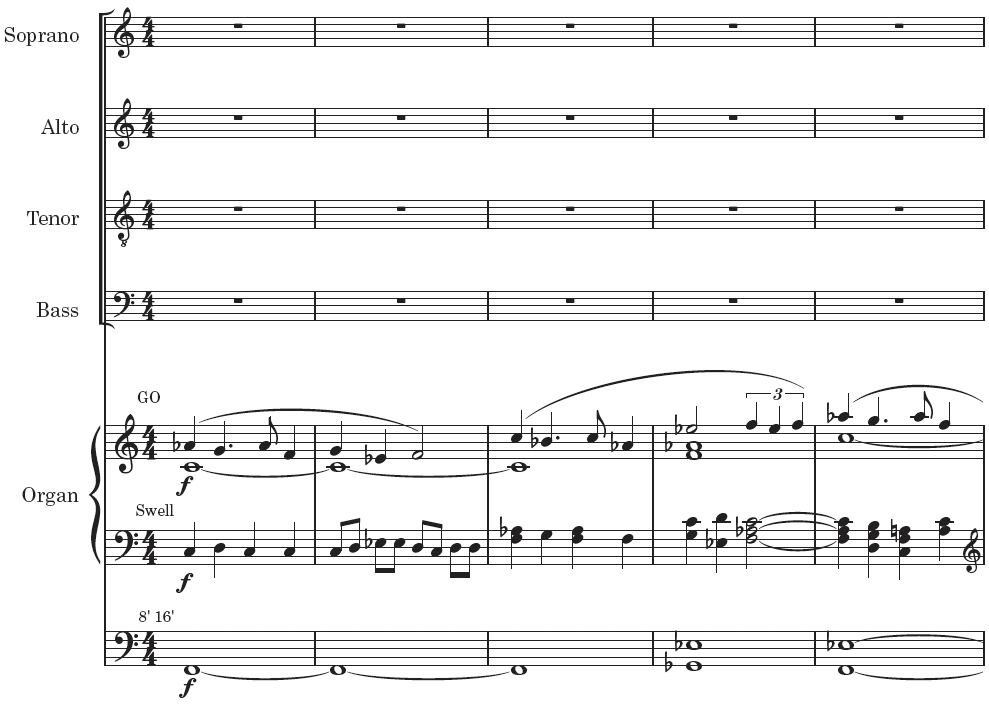
EXAMPLE 20. Cypret, “Requiem aeternam et Rest,” A Great War Requiem, mm. 11-15: Requiem aeternam plainchant.
I subtly integrated the Requiem aeternam plainchant into the harmonic structure and cadential moments. Example 21 illustrates such integration techniques at measure 38, where fragments of the plainchant emphasize the word “Eternal.” While the Requiem aeternam plainchant integration occurs, a Dies Irae motive (F–E–F in the second sopranos and C–B–C in the organ) emerges as the primary melodic element. A possible variant of the motive (A–G–A) further reinforces the prominence of the Dies Irae theme (see Example 21).
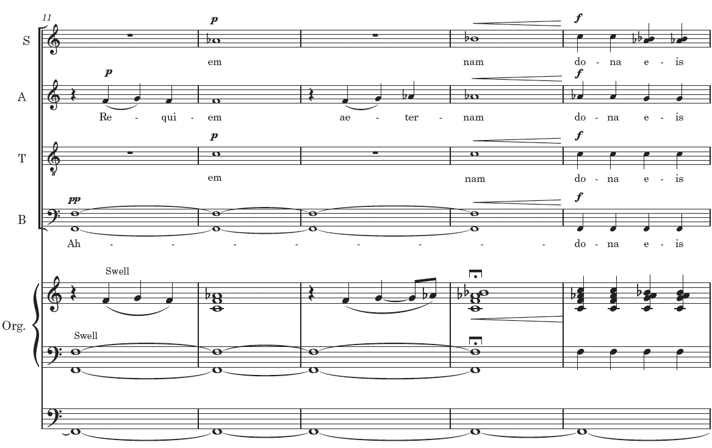
EXAMPLE 21. Cypret, “Requiem aeternam et Rest,” A Great War Requiem, mm. 11-15: Requiem aeternam plainchant. The same gesture reappears on the return of “They say you have gained eternal rest” in measure 52 (see Example 22).
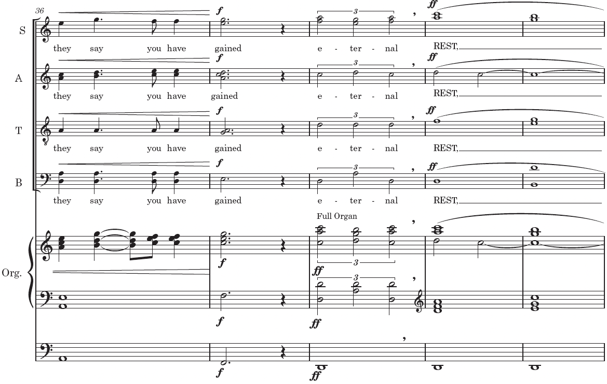
EXAMPLE 22. Cypret, “Requiem aeternam et Rest,” A Great War Requiem, mm. 51-55: Requiem aeternam plainchant. Measure 68 marks the return of the organ introduction, signaling a thematic reprise of the “Requiem aeternam” section and its associated musical material (see Example 23).
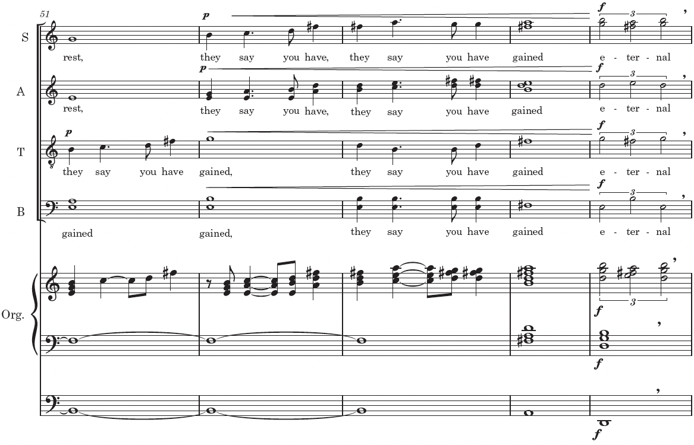
EXAMPLE 23. Cypret, “Requiem aeternam et Rest,” A Great War Requiem, mm. 11-15: Requiem aeternam plainchant.
Kyrie
In the second movement of the composition, titled “Falling Leaves,” I used the Kyrie plainchant of the Requiem Mass as the basis for the thematic material (see Example 24). I incorporated fragments from sections I and III of the Kyrie into the melodic and harmonic textures of the movement, as demonstrated in Example 25. It should be noted that the plainchant material has been adapted and transformed instead of being quoted directly, as shown in Example 25. The green boxes outline the first Kyrie melody and the yellow boxes indicate the second Kyrie melody used in the plainchant in Examples 24-25.
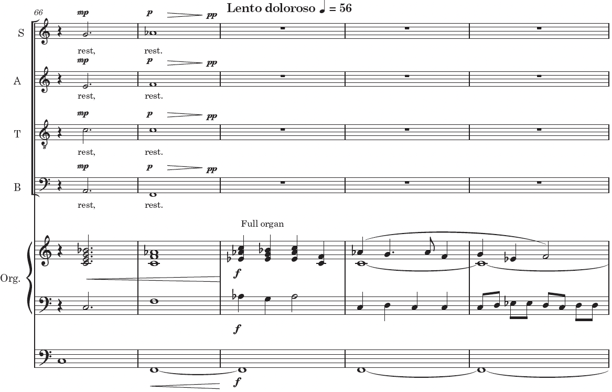
EXAMPLE 24. Kyrie, Requiem Mass, in Liber Usualis in Modern Notation, pp. 1025. Ký - ri - e e - lé - i - son iij. Chrí - ste e - lé - i - son iij. Ký - ri - e e - lé - i - son ij. Ký - ri - e e - - - - *e lé - i - son EXAMPLE 25. Cypret, “Falling Leaves,” A Great War Requiem, mm. 1-3: plainchant melodies and fragments.
Pie Jesu
The Pie Jesu plainchant is from the last couplet of the Dies Irae. I worked the melody
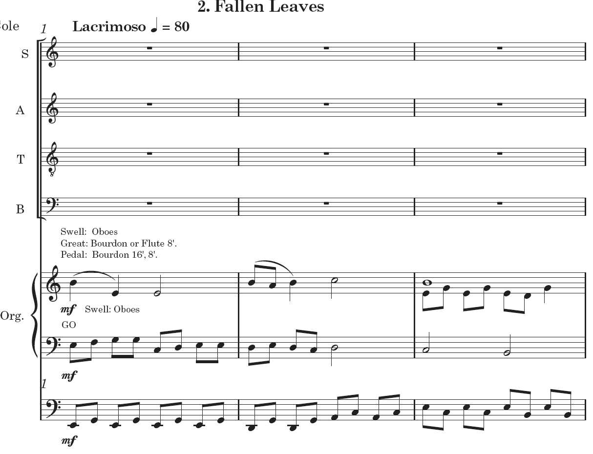
and organ parts. I modified the melody to fit a harmonic structure centered around the pitch F (See the purple boxes in Examples 26-27). EXAMPLE 26. Pie Jesu, Dies Irae, Requiem Mass, in Liber Usualis in Modern Notation, pp. 1029.
Pí - e Jé - su Dó - mi - ne, dó - na é - is ré - qui - em. EXAMPLE 27. Cypret, “Roundel,” A Great War Requiem, mm. 5-9: Pie Jesu, plainchant.
Sanctus
I subtly incorporated the melodic contours of the Sanctus plainchant (see Example 28)
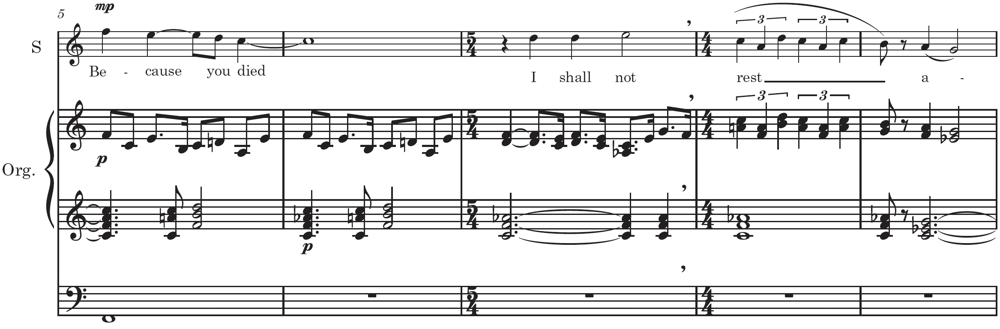
EXAMPLE 28. Sanctus, Requiem Mass, in Liber Usualis in Modern Notation, pp. 1031. Sánc - tus, Sánc - tus, Sánc - tus Dó - mi - nus Dé - us Sá - ba - oth. Plé - ni sunt caé - li et tér - ra gló - ri - a tú - a. Hó - san - na in ex - cél - sis. Be - ne - díc - tus qui vé - nit in nó - mi - ne Dó - mi - ni. Ho - sán - na in ex - cél - sis. © The Sanctus fragment acts as a contrasting motivic and harmonic gesture (see Example 29) and provides continuity in movements 4 and 5 of A Great War Requiem. EXAMPLE 29. Cypret, “Roundel,” A Great War Requiem, mm. 33-38: Sanctus fragment. A Great War Requiem employs thematic fragments derived from the Sanctus plainchant in diverse ways throughout the “Roundel” and “Your Name” movements. The opening pitches of the original plainchant (B–B–A, as shown in Example 28) are absent. Instead, I used transposed and inverted versions of the Sanctus motif (see Example 30), particularly within measures 28-31 of “Roundel.”
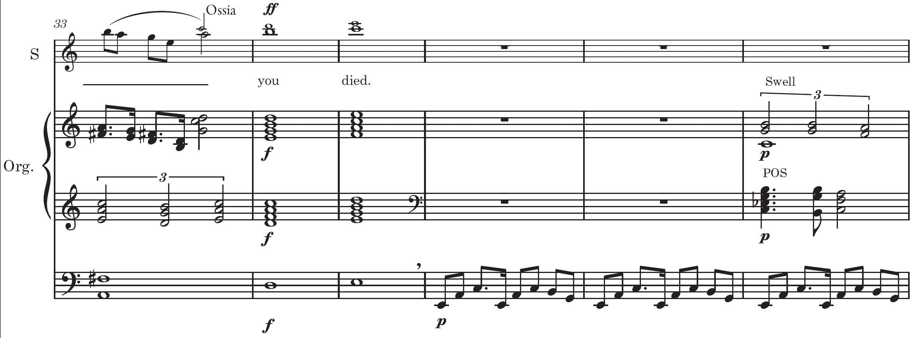
EXAMPLE 30. Cypret, “Roundel,” Great War Requiem, mm 28-32: Sanctus variants.
In the movement “Your Name,” fragments of the Sanctus Requiem Mass plainchant serve as melodic cells, functioning both as thematic subjects and within the contrapuntal texture (see Example 31). Additionally, melodic fragments derived from the Requiem Mass plainchant are present (indicated by blue boxes).
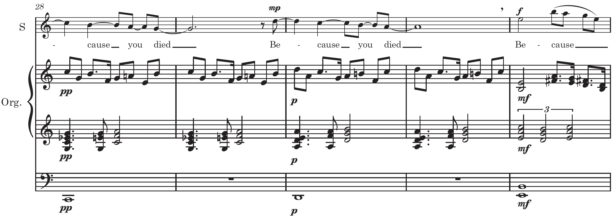
EXAMPLE 31. Cypret, “Your Name,” A Great War Requiem, mm. 7-13: Sanctus and Requiem aeternam fragments. The second fragment used from Sanctus occurs in the contrapuntal statements in mm. 20-25 of “Your Name” (see the grey boxes in Example 32.)
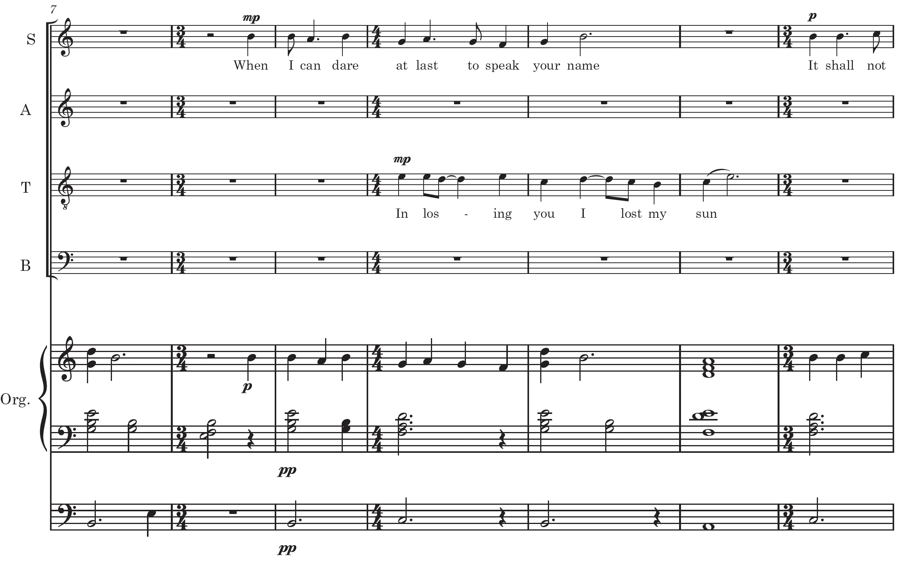
EXAMPLE 32. Cypret, “Your Name,” Great War Requiem, mm. 20-25: Sanctus and Requiem aeternam fragments.
Lux Aeterna
The melodic material of the Lux aeterna plainchant from the Requiem Mass features
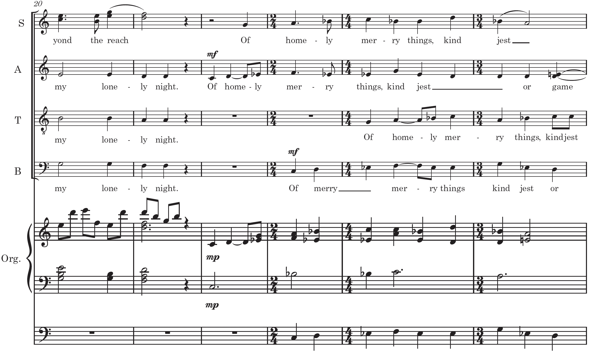
EXAMPLE 33. Lux aeterna, Requiem Mass, in Liber Usualis in Modern Notation, pp. 1032. * lú - ce - at Lux ae - tér - na é - is, Dó - mi - ne:
Cum sánc - tis tú - is in ae - tér - num, qui - a pí - us es.
℣. Ré - qui - em ae - ter - nam do - na e - is Dó - mi - ne, et lux per - pé - tu - a lú - ce - at é - is. * Cum sánc - tis tú - is in ae - tér - num, qui - a pí - us es.
The opening measures (mm. 1-5) of the “Lux aeterna” movement within A Great War Requiem integrate thematic cells and variants derived from both the Requiem aeterna and Lux aeterna plainchant melodies (see Example 34). EXAMPLE 34. Cypret, “Lux aeterna,” mm. 1-5: Analysis of Lux aeterna and Requiem aeternam plainchant fragments.
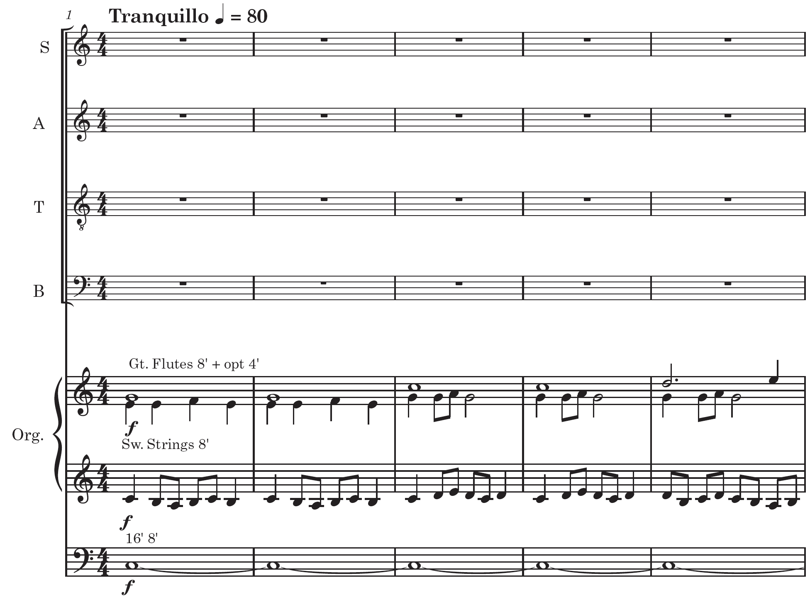
Following the organ introduction in mm. 1-5, the dissertation’s author presents melodic statements derived from the opening phrase (A–G–F–G–A–G) of the Lux aeterna plainchant from the Requiem Mass. The Lux aeterna plainchant fragments appear in mm.12-22 (see Example 35 and 36). While recognizable, the melodic contour of the plainchant is integrated within a broader contrapuntal and harmonic context and is another example of an adaptation of Requiem Mass plainchant into the composition. EXAMPLE 35. Cypret, “Lux aeterna,” Great War Requiem, mm. 12-18: Lux aeterna plainchant.
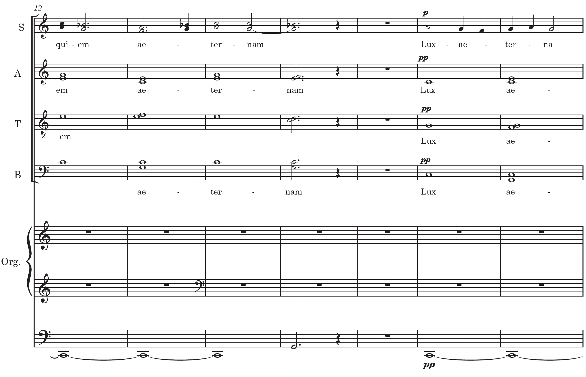
EXAMPLE 36. Cypret, “Lux aeterna,” Great War Requiem, mm. 19-24: Lux aaeterna plainchant. The Lux aeterna plainchant melody continues movement 6, mm. 23-24 (see Example 36) with the text “Cum sanctis tuis in aeternum, quia pius es.”
Requiescant in Pace
A Great War Requiem features the plainchant Requiescant in pace [Rest in Peace] (see Example
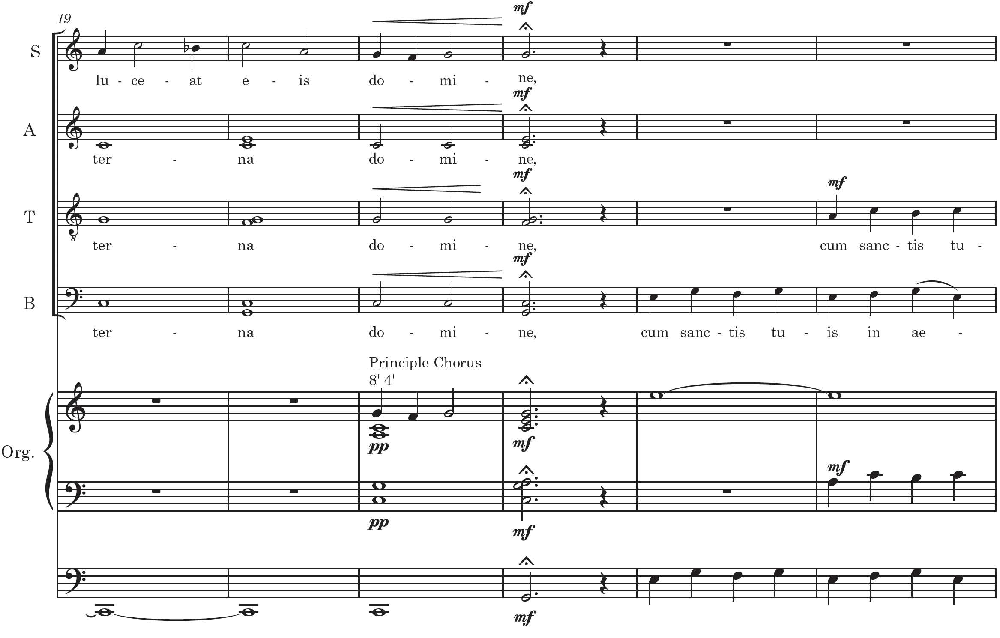
EXAMPLE 37. Requiescant in Pace, Requiem Mass, in Liber Usualis in Modern Notation, pp. 1032.
Re - qui - és - cant in pá - ce. ℟ A - men I refrained from directly quoting the Requiescant in pace plainchant in movement 6: “Lux aeterna.” Instead, selected pitches are incorporated into the melody (see Example 38). Which combined with the text, evokes the original Requiem Mass plainchant. EXAMPLE 38. Cypret, “Lux aeterna,” mm. 66-72: Requiescant in pace plainchant.
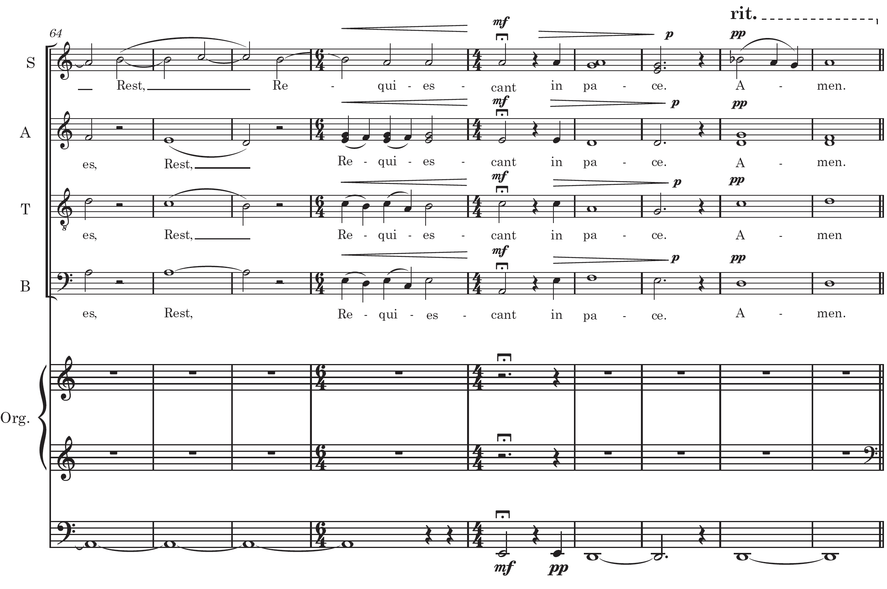
Chapter Summary
Chapter IV examined the integration of traditional plainchant melodies within the compositional fabric of A Great War Requiem. I have demonstrated how Requiem aeternam, Kyrie, Dies Irae, Pie Jesu, Sanctus, Lux aeterna, and Requiescant in pace underwent thematic transformation while serving to unify the work. Special emphasis was placed on the cohesive function of the Requiem aeternam and Dies Irae plainchant motives.
In this composition, I adopted an adaptive approach, reworking the plainchant melodies to align with the Requiem Mass’s contemporary idiom and its exploration of Great War themes. The composition process involved modifying the harmonic context (with elements of minor tonality and chromaticism) and using plainchant motives as fragmentary melodic cells.
Notes
- 113. Benedictines of Solesmes, Liber Usualis in Modern Notation (Paris: Decleé, 1924), 1024, 1026.
- 114. Liber Usualis in Modern Notation, 1029.
- 115. The Benedictines of Solesmes, Liber Usualis in Modern Notation, 1031.
- 116. The Benedictines of Solesmes, Liber Usualis: In Modern Notation, 1032.
- 117. See Liber Usualis in Modern Notation, 1032.